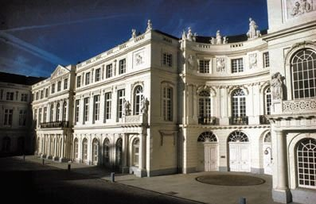
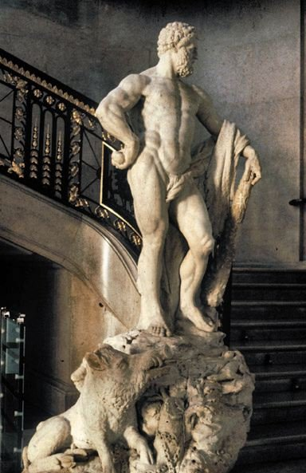
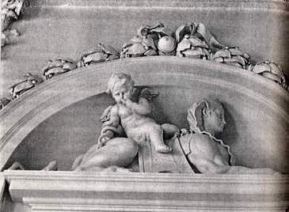
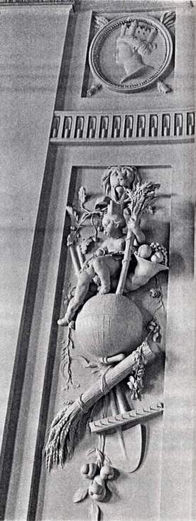
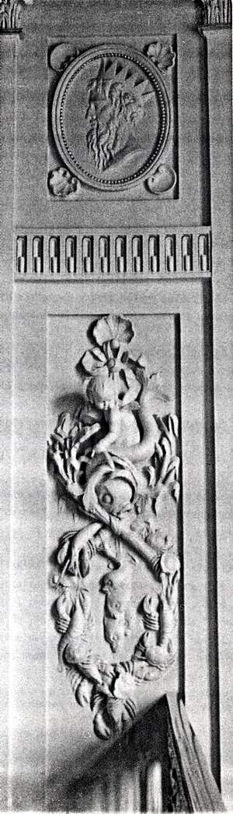
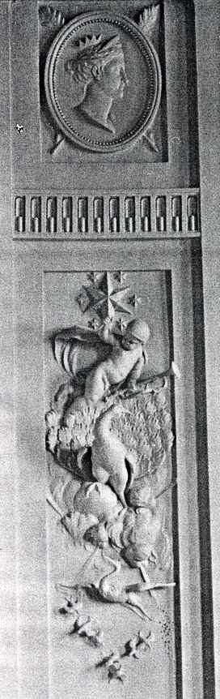
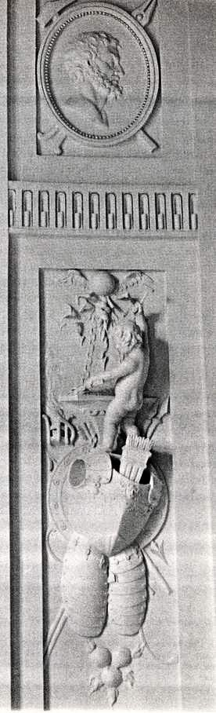
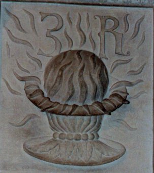
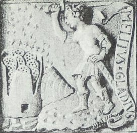

Palais de Charles de Lorraine Musée du XVIIIe siècle
1, place du Musée, 1000 Bruxelles
revu le 10 juin 2006
PréambuleJe dois ce texte à M. Ricard Gonzales avec qui j'avais déjà échangé des Mail en février 2002. Cette demeure philosophale n'est, a priori, pas bien connue. Nous ne savons pas au juste qui est l'auteur des notes que vous verrez ci-dessous. Le texte peut en être trouvé à l'url suivante :
http://isuisse.ifrance.com/channy/ -
Ces notent montrent, quoi qu'il en soit, une connaissance certaine du processus alchimique ; j'ai corrigé le texte à quelques reprises et remis de l'ordre dans les guillemets. Chaque symbole est pourvu d'une annotation, soit dans le texte, soit par lien hyper texte. Nous avons mis à contribution, pour cette fois, le tome II des Fables Egyptiennes et Grecques de Joseph-Antoine Pernety.
Les notes de mon cru apparaissent [entre crochet, en caractères Verdana 10, couleur rouille]. Il manque une photo, celle où l'auteur analyse la prima materia. Nous recherchons des internautes qui posséderaient des images en couleur des sculptures de ce bel escalier hermétique.
Remerciements à Ricard Gonzales pour le texte et sa suggestion pour la 4ème ruche du Typus Mundi que j'avais oubliée.

FIGURE I
(le palais de Charles de Lorraine)
Le Musée du XVIIIe siècle est abrité dans le palais de Charles de Lorraine, gouverneur général des Pays-Bas autrichiens de 1744 à 1780. Ce palais fut construit à partir de 1757 à l'emplacement de l'ancien hôtel de Nassau. Il en reste une façade entre rocaille finissant et néo-classique dont les éléments décoratifs sont l'œuvre de Laurent Delvaux.

FIGURE II
(la cage d'escalier)Un escalier jouxtant l'actuel Cabinet des Estampes de la Bibliothèque Royale, donne accès aux appartements restaurés de Charles de Lorraine. Au pied des marches se dresse une imposante statue de marbre représentant HERCULE tenant la peau du Lion de Némée sur le bras gauche dont la main s'appuie sur une massue marqué de l'initiale " C " [initiale du sujet des Sages, analogue au G latin qui est un C inversé] flanquée de deux croix de Lorraine surmontant celle de l'ordre Teutonique. La rampe en fer forgé s'orne de bas-relief ajourés, récents, qui illustrent les travaux du héros mythologique. ils remplacent les originaux, vraisemblablement emportés par des commissaires de la république française vers 1794.
Hercule représente l'adepte et ses travaux sont l'allégorie de ceux que doit réaliser l'alchimiste avant d'entrer dans le Grand oeuvre. Sa présence est le premier indice du caractère philosophal de ce lieu et la signature de son ancien propriétaire, sur la massue, implique son assimilation à l'adepte de l'Art.[toutes les sculptures représentant Hercule n'ont pas une intention hermétique et la massue est un symbole très général ; il est vrai qu'il s'agit d'un des arcanes de l'oeuvre, cf. Atalanta, XXXV et Légende de Siegfried où son symbolisme est analysé ]
Le chercheur curieux se reportera utilement aux explications fournies par Dom Pernety, concernant les travaux d'Hercule et leurs rapports avec l'alchimie, dans ses Fables grecques et égyptiennes dévoilées (livres V, chap. I à XXII, p.349 et suivantes) [rapellons que le tome I des Fables Egyptiennes et Grecques est disponible sur le serveur Gallica de la bnf et sur le site hermétisme et alchimie.]
Au sommet de l'escalier apparaît le symbolisme du grand Oeuvre proprement dit.

FIGURE III
(le sphinx, l'ange et le serpent)Une porte est surmontée d'un Sphinx que chevauche un angelot dont le bras droit, autour duquel s'enroule un serpent, repose sur le dos de sa mystérieuse monture. L'enfant porte l'index de la main gauche sur les lèvres, invitation au silence et à la discrétion.
[l'ange est le médiateur du ciel et de la terre ; le serpent montre qu'il participe du Mercure. Cette origine mercurielle se comprend dès lors qu'on sait que le sphinx a pour parents Echidna et Typhon, cf. Atalanta, XLIV. Le rapport est évident entre ce sphinx et la figure d'Hercule, au bas de l'escalier ; en effet, l'Artiste se trouve au « fondement » de l'oeuvre, symbolisé par le bas de l'escalier et il doit gravir les marches de l'Escalier des Sages dans ce voyage singulier avec la matière. Sur d'autres rapports au sphinx, cf. surtout l'Atalanta, XXXIX, consacré au monstre et l' Atalanta, XVI pour des notes supplémentaires. Sur le silence imposé aux Adeptes, on doit savoir qu'il ne vaut que pour ceux qui ont reçu l'enseignement initiatique d'un maître : il ne vaut pas, en revanche, pour celui qui a reçu l'inspiration divine et dont le résultat provient de ses recherches ou qui représente le fruit de son travail. A celui-là, il ne sera demandé que l'anonymat ; c'est la raison pour laquelle le nom de votre serviteur n'apparaît pas dans ces pages. L'idée générale développée par cette liaison entre l'ange « serpentin » et le sphinx est d'indiquer la fixation de la viscosité - représentée par le serpent - par un principe fixe qui est voilé par la figure du sphinx. On pourra trouver encore des développements sur ce symbole complexe dans la section Fontenay.]
En face, dans le même axe, les symboles de la materia prima et de son origine céleste. De part et d'autre de cet axe, quatre panneaux sont consacrés aux quatres éléments : la Terre, l'Eau, le Feu, l'Air. Ces derniers sont accompagnés de portraits en médaillons des personnifications antiques correspondants :
DANAE - NEPTUNE - VULCAIN -VENUS
Au dessus de la materia prima et du Sphinx figure le signe graphique du Soleil
dont le relief, accusant la forme d'un sein, souligne la fonction nourricière de l'astre mais exprime aussi, par la position élevée du centre, sa prédominance sur la périphérie.
* * *

FIGURE IV
(la Terre)L'agriculture céleste, chère aux philosophes chymiques, est illustrée par le travail du laboureur. Le panneau de la Terre présente la planète striée de ses méridiens et parallèles et surmontée d'une corne d'abondance sur laquelle est assis un enfant. Au pôle inférieur sont suspendus une faucille et une gerbe de blé. La pelle et le rateau coupent la scène en diagonale et trois fruits en triangle (1) la ferment.
[La pelle et le rateau, instruments « aratoires » par excellence, sont utilisés fréquemment dans les symboles rattachés à la franc-maçonnerie ; ils avaient cependant une origine antérieure, qui se rattachait à l'Art sacré. Voyons cela : la terre est ouverte avec une pelle. Il s'agit donc de l'instrument qui, manié au gré de l'Artiste, permet d'ouvrir la terre hermétique, celle qui apparaît dans le signe du Capricorne ; le rateau permet d'égaliser la terre et de distribuer les graines. Par cabale, il est aisé de conclure que la pelle est comparable à un agent chimique d'ouverture du minéral ou du métal : cette « ouverture » métallique correspond à l'exhalaison de l'âme du métal, nommée par les alchimistes leur humide radical métallique. Nous verrions dans le rateau l'agent physique qui permet de manoeuvrer cette âme : il ne peut s'agir que du Mercure ou de Vulcain ardent, autrement appelé le feu sacré - et secret - des Sages. Ces instruments, en un mot, sont ceux de l'agriculture céleste à laquelle est souvent comparée l'Art d'Hermès.]
L'enfant, qui porte une rose, symbole de la Pierre philosophale, a le chef coiffé d'un château. Vu que DANAE apparaît en médaillon, au dessus de ce panneau, la tête ornée de la même construction, il est aisé de reconnaître en cet enfant son propre fils. DANAE, c'est la « terre damnée » des alchimistes, celle qui, issue des scories de la séparation, produit ADAM, la terre rouge dans laquelle l'artiste trouve son précieux soufre : le véritable fruit de la terre.
[La terre, pourvue de ses méridiens, prend ici la valeur de l'Aimant des Sages, c'est-à-dire de tout ce qui a trait au dissolvant. Dans le même temps, elle représente ce qu'est l'objet même de la dissolution. Les tours fortifiées du chef couvrant le médaillon - celui surplombant l'enfant - ne laissent aucun doute sur l'attribution symbolique : il s'agit de Cybèle ou de son équivalent. Cybèle, qui, rappelons-le, trône sur un siège dont les montants sont faits de deux lions où l'on voit Atalante et Hippoménès. La faucille est une indication supplémentaire sur le dissolvant puisqu'il s'agit de l'attribut de Cronos, le Mercurius senex. Quant à la « terre damnée » des alchimistes, cf. Entretiens de Calid à Morien avec les références. En résumé, la terre damnée peut être assimilée à la matière grave issue d'un sel d'Aphrodite sur laquelle s'abat le glaive d'Arès : il s'agit de l'un des composants du feu secret. Certains en font la tête morte - caput mortuum - de l'eau forte. On peut retrouver la gerbe de blé dans l'une des Douze Clefs de Philosophie, attribuées à Basile Valentin : c'est le résultat attendu de la dissolution. Aussi bien trouvons-nous plusieurs emblèmes de l'Art regroupés d'une façon logique, puisque la Vierge est cet endroit du zodiaque où le Rebis mûrit et s'accroît, par transformation progressive de la forme du Mercure en eau permanente résolutive ; elle porte alors le nom de Lait de Vierge. Sur la symbolique de Danae, cf. l'Atalanta XLIV.]
Le mythe de DANAE : Fille d'ACRISIUS, roi d'Argos, l'infortunée se retrouve enfermée par son père dans une tour afin d'éviter qu'il lui vienne un fils qui pourraît le détrôner. Le rusé JUPITER la féconde cependant, s'étant transformé en pluie d'or. DANAE donne naissance à son fils PERSEE. DANAE est le réceptacle vierge, la potentialité enfermée dans une forte tour, c'est-à-dire dans une gangue matérielle dense. Elle est cette part spirituelle qui, emprisonnée dans la matière lourde, peut néanmoins être fécondée par les imbibitions de l'esprit (sa propre nature profonde reconnue) et produire, grâce à l'expansion jupiterienne, un être plus riche en vertu. La couleur rouge de la terre élue pour la création d'ADAM symbolise le sang et l'incarnation dans la matière, la corporification de l'esprit qui succède à la spiritualisation (purification) du corps. (2)
[On n'en finirait pas de relever les occurrences de la terre adamique dans les vieux traités ; l'illustration la plus complète est celle qui figure dans la Toyson d'or - alias Splendor Solis - de Salomon Trismosin. Rappelons que Persée est lié à l'oeuvre par la décapitation de la Gorgone, qui livre deux sels, voilés par Chrysaor et Pégase, cf. Fontenay.]
Les alchimistes se désignaient souvent eux-mêmes comme « laboureurs » ou « labourants » en raison de la phase de l'Oeuvre qu'ils assimilent aux travaux des champs. C'est ainsi qu'on voit un paysan semant de l'Or dans les sillons d'un champ labouré, sur le huitième emblème de l'Atalanta Fugiens de Michael Maïer. Cette figure est accompagnée du texte suitant :
Les paysans à la grasse terre livrent leur grain
Lorsqu'avec leur rateau ils l'ont bien feuilletée
Les sages ont transmis l'art de répandre l'or
En la neige des champs tels des feuilles minces
Pour faire ainsi regarde bien : vivant miroir
Le froment saura t'enseigner comme l'or germe. (3)[On trouvera dans notre commentaire de l'Atalanta fugiens une analyse complète de cet emblème VI. Il ne s'agit pas, comme l'auteur le croit, de l'emblème VIII qui est une allégorie sur l'oeuf et le glaive de feu.]
La scène, comportant l'enfant et les instruments aratoires précités, est suspendue à un large ruban qu'un Lion tient serré dans sa gueule. Nous voici en présence du fameux LION VERT que l'artiste devra capturer, tout comme HERCULE qui a vaincu le Lion de Nemée à l'aide d'une massue garnie de clous de fer...ses flèches s'avérant trop faibles, c'est-à-dire trop « volatiles » pour accomplir ce travail. Dom Pernety écrit qu'il s'agit
« d'un lion purement chymique, presque invulnérable et né de la salive de la Lune » (Fables égyptiennes T. II; p.372) [Il s'agit du Livre V, chap. III, cf. annexe I]
Quel est donc cet étrange animal « chymique » et quelle est sa fonction dans l'Oeuvre...
[Le Lion vert représente le Mercure en son premier état, appelé, par l'infusion des Soufres dissous - les colombes de Diane - à se transformer en Mercure philososhique ou double Mercure ; il est alors nommé Lion rouge. Nous en parlons constamment dans nos sections. Dans les lignes qui suivent, l'auteur fait un peu de cabale qui ne nous semble pas franchement concaincante... Certes l'allusion à l'huile de verre est classique mais il s'agit alors du vase de l'oeuvre. ]
Vert, peut s'entendre "Verd" = vrai (vér-idique)
La couleur verte évoque, selon E.CANSELIET, la couleur de l'Esprit Universel lorsqu'il se corporifie dans un véhicule physique correctement composé pour le recevoir. Ce véhicule est un double sel dont l'obtention est requise dès le début des travaux et qui se charge progressivement de la couleur et du POIDS de l'Esprit Universel au cours de l'Oeuvre. C'est lui le véritable V.I.T.R.I.O.L.U.M. et il ne faut pas s'étonner de le voir évoquer sur ce panneau consacré à la Terre si la formule bien connue est traduite ainsi :Visita Interiora Terre Rectificando Invenies Occulta lapidem Verram Medicinem.
[Sur cette maxime, cf. Donum Dei ainsi que les références qui s'y attachent. Le double sel à présent : à quelle partie de l'oeuvre se rapporte-t-il ? Car des sels doubles, il y en a plusieurs. D'abord celui formé par l'union d'Arès et d'Aphrodite, étudié dans la section de l'Arcanum duplicatum. Ensuite, le sel double philosophique qui est l'amalgame - sans que pourtant on n'y décèle aucune trace de vif-argent vulgaire : c'est alors le Rebis, forme prochaine de l'Airain. On pourrait en citer d'autres qui, il est vrai, sont requis dans des opérations qui se rattachent encore à la chimie et non à l'alchimie : il s'agit en fait de toutes les opérations qui se déroulent avant la Grande Coction, dont le secret, comme l'a écrit Fulcanelli, repose sur un artifice qui est davantage physique que chimique. Nul doute que le poids intervienne : poids de l'Art contre poids de nature. Là encore, Fulcanelli a fait voir que le poids de Nature ne peut pas être contrôlé par l'Artiste - notez que les physiciens modernes parlent de « masse critique » ; il y a là une indication. ]
L'invitation est faite à l'artiste de visiter les profondeurs de sa terre afin d'y découvrir sa pierre. La formule se lit aussi VITRIOLEUM, huile de verre, liant-verre et donc Lion Vert; composé salin qui relie le soufre et le mercure lors de la conjonction. Ceci désigne assez clairement la nature cristaline et saline du « vase spirituel » de l'Oeuvre (Christ-sal, le sel de la terre). FULCANELLI rappelle d'ailleurs l'étroit rapport qui existe entre le Lion Vert et l'Oeuf philosophique. La corne d'abondance, autre symbole de la Pierre philosophale sur le plan matériel cette fois, évoque les richesses que l'artiste peut attendre de la réussite de son labeur.
[Notre composé salin, comparé par Fulcanelli au Sundial d'Edimburgh - cf. DM, II et 1, 2, 3, 4, 5, 6, 7 - EST le Mercure, qui est chargé d'établir la liaison entre les deux extrémités du vaisseau de nature, i.e. le Soufre et le Sel. Les alchimistes ont ici joué d'ambiguité et c'est à plusieurs reprises que nous avons bien insisté sur le fait que les vieux auteurs nommaient deux substances différentes leur premier Mercure, en le distinguant bien du vif-argent vulgaire ; la solution peut être apportée par l'examen de l'orientation du croissant de Lune et cela, notez-le bien, dès Zosime, cf. prima materia. Quant à la corne d'abondance, dont on voit de manignifiques spécimens en Avignon, - cf. Palais de la Monnaie, in Atalanta XXXVIII, clichés Alain Mauranne -, elle symbolise les fruits du Jardin des Hespérides dont l'entrée - le Mercurius senex - est gardée par le dragon Ladon.]
(1) DOM PERNETY (Fables égyptiennes ch.XIII) décrit le PERSEA, fruit de cet arbre toujours vert, en forme de poire et consacré au dieu du silence...
(2) Jésus qui, comme le veut la tradition, était toujours vêtu de blanc, sera revêtu de pourpre au moment de la passion.
(3) En hommage à GRASSET d'ORCET et à FULCANELLI, cette phrase pourrait se lire : « vif en mi-Roi, l'oeuf romain saura tant saigner que ment lors guère me».[Occasion pour rappeler au lecteur un site sur l'art gauth qui étudie de façon approofondie la cabale de Grasset d'Orcet qui, nous devons l'avouer, nous échappe totalement.]
* * *

FIGURE V
(l'Eau)La scène de la Terre était suspendue à la gueule du Lion, celle de l'eau est liée à une coquille Saint-Jacques - signe distinctif des pèlerins de Galice encore appelés « pèlerins mérellés ».
[Nous renvoyons le lecteur aux fontaines admirables photographiées par Alain Mauranne, qui rehaussent le commentaire de l'emblème XL de l'Atalanta fugiens. Nous ne saurions en dire plus sur ces mérelles que ce qui nous y avons porté en 2002. Ajoutons toutefois que s'il était logique que la TERRE fût liée au LION, il est non moins logique que l'EAU le soit à la MERELLE. Et tout comme on parlait de SEL DOUBLE au chapitre précédent, il nous faut parler ici de SIGNE DOUBLE, sous les figures du VERSEAU et des POISSONS. Si nous devions retenir un nom, ce serait celui de Thétys, en pointant son rôle nourricier. Mais comment ne pas rapprocher ce dauphin de ceux que nous apercevons sur la fontaine des Dames à Besançon ? ]
La mérelle correspond au « vannet » de l'héraldique, c'est le petit vaisseau, le van contenant l'eau mercurielle. [sur le van, cf. saint Jean Baptiste]
Si Botticelli fait naître VENUS de la mérelle (mer-elle ou mer-El) il ne fait pas seulement preuve du grand talent que l'on sait, mais également de la même connaissance que l'alchimiste qui y fait naître le Petit Roi symbolisé sur notre panneau par le Dauphin portant un angelot.
Voici ce qu'en dit FULCANELLI :« C'est là notre précieux soufre, l'enfant nouvellement né, le petit roi et notre dauphin, poisson symbolique autrement appelé échénéis, rémora ou pilote, Persée ou poisson de la mer Rouge...»
[citation du tome II des Demeures Philosophales, p. 36. C'est à l'occasion de l'examen des caissons de la galerie alchimique du château de Dampierre-sur-Boutonne que ces réflexions ont été formulées par Fulcanelli.]
L'adepte contemporain rappelle en outre qu'ACRISIUS fit enfermer DANAE et PERSEE dans un coffre qui fut jeté à la mer.
[cf. la note 80 du commentaire de la Nouvelle Lumière Chymique d'Alexandre Sethon.]
L'enfant ailé et le dauphin occupent l'espace compris entre les « cornes » de la lettre Y que forment des branches d'algues croisées et des crustacés, crabes et écrevisses. Ces derniers font allusion au signe zodiacal CANCER (dont l'écrevisse est l'animal symbolique ancien). Le signe évoque les eaux placentaires de la gestation qui, une fois franchies, feront passer l'embryon précédemment formé, dans le signe du LION, celui de l'or, première expression de l'homme individué. Ce germe hermaphrodite de la pierre naissante est pour ces raisons nommé « poisson de notre mer » par les alchimistes.
[Contrairement à l'auteur, nous pensons que le Cancer, lieu de formation et de conjonction encore instable du Rebis Y, mûrit dans les Gémeaux et que, de là, il passe à la Balance où il est remis dans les mains de Témis. Sur le Cancer, cf. Atalanta XLII.]
* * *

FIGURE VI
(l'Air)Surmonté d'une étoile à six branches entourée de six étoiles semblables mais plus petites, un Cupidon casqué tient à la main gauche une trompette. il survole un paon dont la patte droite est posée sur une sphère entourée de nuées dont émergent quatre petites têtes soufflant les quatre vents. Le souffle provenant de la tête inférieure produit une cristallisation. Les ailes d'une cigogne en vol, parfaitement déployées à l'horizontale, forment le côté supérieur d'un triangle posé sur l'apex dont les deux autres côtés comportent sept petits oiseaux.
[Fulcanelli affirme que, dans le processus de coagulation progressive de notre eau mercurielle, l'étoile ou la fleur se manifestent alternativement sept fois aux yeux de l'Artiste, cf. E. Canseliet in l'Etoile polaire des Mages, l'Alchimie expliquée sur ses Textes classiques. L'image du paon, centrale dans ce panneau, est la manifestation de la lumière qui sort par elle-même des ténèbres. Oiseau de Junon, il manifeste le signe avant coureur de l'Aurore, époque marquée par des irisations à la surface du bain des astres -mais comme tout cela se passe dans un creuset brasqué, on voit mal comment ces couleurs peuvent être percçues autrement que par l'entendement. L'ange casqué brandissant une trompette mériterait un volume entier ; l'entreprise excédant nos forces, on se contentera d'en dire ceci : l'ange est le même que celui qu'on observait déjà sur les précédentes figures : les objets qu'il tient rendent compte de points illustrant la pratique de l'oeuvre. Dans le cas présent, le casque [cassis, i.e. cado, cassito par cabale] renvoie au caractère fluent, dégouttant - dégoûtant - de la matière à ce stade de la Grande coction. La trompette est celle-là même que l'on voit en frontispice du Mutus Liber. Comme dans le Livre Muet, l'ange s'apprête à jouer du buccin pour réveiller le dormeur, c'est-à-dire pour animer le mercure et pour en spiritualiser sa forme : le Soufre. L'image du héron - la cigogne - ressortit d'un symbolisme qu'on voit rattaché au Lévitique - 11, 18-19 - où il est fait allusion au caractère immonde - dégouttant - de l'oiseau. C'est affirmer un peu plus le symbolisme que l'on vient juste d'évoquer, par l'allusion au casque. Le héron est gage, pourtant, de bon augure puisque dans l'oeuvre comme dans la vie, c'est dans une corbeille qu'il apporte l'enfant... Et là il s'agit de notre BasileuV. Cette interprétation est réitérée si l'on tient compte que le héron, comme l'Ibis, est oiseau tueur de serpent - hiéroglyphe du vieux Mercure ou du vieillard de l'oeuvre. Il ne faut donc pas trop croire la légende qui affirme que l'oiseau nourrit son père vieillissant. Dans la même veine, ajoutons que le héron, dans l'Egypte ancienne, avait non seulement la valeur d'ibis, mais plus encore, de phénix. C'est du reste d'un air majestueux et comme réchappant de quelque « désastre obscur » - pour reprendre un fragment de Mallarmé - que notre oiseau apparaît en vainqueur au bas de la sculpture. Enfin, les hermétistes notent que la cigogne est, avec le lièvre et le corbeau, un animal cher aux alchimistes taoïstes, cf. Lapidaires chinois. Sur l'étoile, cf. études de symbolisme général. La sphère entourée de nuées est l'état de l'oeuf philosophal en cette époque où l'Air des Sages prédomine, tenant en suspension - sublimé - le Soufre rouge ou teinture. ]
L'étoile est le signe et le sceau de l'esprit, c'est elle que suivent les Mages à la recherche de l'enfant divin. C'est elle aussi qui guide les pèlerins de Saint Jacques de Compostelle (Compost-Stella), puisqu'ils appellent leur voyage : la course à l'étoile. L'étoile guide aussi l'alchimiste dans ses travaux où elle est annonciatrice de la préparation canonique de la matière et de l'animation de celle-ci par les ondes vitales du cosmos qui marquent le régule de son universel sceau radiant.
[Rappelons que pour Fulcanelli, le signe à ne pas manquer est ce c qui apparaît à la surface du dissolvant canoniquement préparé. Ce khi correspond à la lettre C et peut encore être pris pour un G inversé, chose qu'autorise la cabale. Dans ces conditions, il est logique d'y voir un élément sublimé où tour à tour la TERRE - G est l'initiale de Gaïa - et l'Âme - C est l'initiale de calx, c'est-à-dire chaux où l'on peut voir un oxyde en dissolution - se présente à l'esprit : allégorie que Fulcanelli a reprise par le thème sur l'étoile - notre C - et la fleur - premier affleurement de notre Délos, notre G.]
La présence de Cupidon indique naturellement la caractère vénusien de cet ensemble. Le règne de la déesse est également signalé par la présence du paon tel qu'il figure dans le SPLENDOR SOLIS de Salomon TRISMOSIN et sur la troisième planche du MUTUS LIBER.
[On ne voit pas en quoi le paon est lié à Vénus ; la mythologie l'associe d'habitude à Junon, i.e. Héra. C'est un symbole solaire, assez général, qui en alchimie a valeur d'annonciation de l'Aurore. Une autre légende vaut la peine d'être citée car elle rejoint nos préoccupations : elle nous vient de Bohême. Lorsque Dieu eut créé le paon, les ept péchés capitaux jalousèrent sa beauté. Il leur dit alors : « Oui j'ai été injuste, car je vous ai donné trop encore ; les péchés mortels doivent être noirs comme la nuit qui les couvre de son voile. » Dieu posa alors sur les plumes de l'oiseau « L'oeil jaune de l'envie, l'oeil vert de la jalousie et ainsi de suite. » Le paon depuis lors est persécuté par les péchés à la recherche de leurs yeux. L'allégorie est claire : les sept péchés sont les sept planètes connues dans l'Antiquité, c'est-à-dire les sept métaux et les yeux posés sur la queue couleur nuit du paon sont les chaux dissoutes - dissolues - de ces métaux. Mais il y a un métal - que l'Artiste doit savoir élire - à qui on pourrait appliquer ce vers de René Char : « des yeux purs cherchent en pleurant la tête habitable. ». Le paon est un oiseau qui est encore apparenté au phénix.]
Les ailes de la cigogne évoquent les plateaux en équilibre de la Balance (signe d'air - vénusien) et la trompette tenue par le rejeton de vénus annonce l'harmonie des cuivres (métal correspondant à Vénus).
[Il nous semble plus conforme à la cabale de dire que l'ange s'apprête à réveiller le Mercure au son de l'airain.]
Cette harmonie est le propre de l'ART DE MUSIQUE. Vénus apparaît à l'horizon avant le Soleil et mérite, comme Lucifer, le nom de porteur de lumière. La tradition veut que Lucifer ait perdu l'emeraude, gemme verte, qui ornait son front lors de sa chute. Cette abondance de couleur verte dans la symbolique vénusienne nous ramène au Lion Vert examiné plus haut. Notons au passage que l'attribution symbolique de la couleur verte au principe d'harmonie et d'équilibre n'est nullement fantaisiste. C'est en effet la couleur verte qui occupe le juste milieu dans le spectre des radiations visibles de l'oeil humain et il est reconnu que sa présence est calmante et apaisante.
De même que Vénus annonce la lumière, la cigogne apporte les enfants et la tradition en témoigne. HERMES précise que « le vent l'a porté dans son ventre » lorsqu'il fait allusion à la génération de la Pierre.
Le bas de la composition évoque le moyen par lequel est fixé « l'enfant » apporté par le vent (4) Les sept oisillons, se réfèrent aux sublimations ou « laveures ignées », car les philosophes lavent par un feu et brûlent par une eau, durant lesquelles le Sel cristallisé fixe l'esprit comme nous l'indique clairement le souffle du vent inférieur.[Le texte des Laveures de Flamel - Manuscrit Bibliothèque National S.XV (Ms 19978 et 19962 et 14789 Livre des Régimes) - était introuvable sur le Net ; hélas, le texte en est fort abscons... Le site hermétisme et alchimie nous l'a restitué, depuis. Il serait plus exact de direque le Sel - le Corps de la Pierre - fixe le Soufre - la teinture - durant les laveures ignées.]
4) Six étoiles entourent l'étoile centrale. Chaque étoile a six branches et un centre.
Dante Alighieri disait :
Nous sommes élevés à la septième splendeur qui sous la poitrine du Lion ardent, rayonne vers le bas son influence mixte. Fiche l'esprit derrière tes yeux et fais de ceux-ci un miroir à la figure qui dans ce miroir te sera apparente. [Philalèthe écrit : « ... si Saturne a vu sa beauté dans le miroir de Mars. » Peut-être avait-il lu Dante...]* * *

FIGURE VII
(le Feu)Ce panneau est consacré à Vulcain et donc à l'élément igné. La scène est dominée par une sphère ailée, d'où émanent des éclairs, liée par une forte chaîne à une enclume sur laquelle un enfant bat le fer. Le petit forgeron se dresse sur la cuirasse d'Hercule. Un brasero d'où s'échappent des flammes occupe la partie gauche de la composition. Sous les armes d'Hercule, trois grenades flamboyantes sont disposées en triangle.
[Le premier élément qui retiendra notre attention est cette sphère ailée. On peut trouver dans l'iconographie alchimique un détail qui rappelle fortement cet arcane : il s'agit d'un ouvrage, fort rare, appelé l'alchimie de Flamel et dont on a montré l'identité avec le Testament d'une part et le Bréviaire d'autre part, cf. Testament de flamel. Inutile de dire que ces traités sont apocryphes car Nicolas Flamel n'a sans doute pas écrit une ligne d'alchimie de sa vie, cf. Figures Hiéroglyphiques. Quoi qu'il en soit, si vous observez la figure VI de cet ouvrage, vous observerez une terre ailée qui rappelle étrangement la
sculpture de la figure VII. Du coup, il sera d'autant plus facile d'analyser cette sculpture par le biais de l'analogie allégorique. Mais il y a plus : un traité de Michel Maier, le Symbola Aureae Mensae, datant de 1617, où l'on voit, dans l'une des gravures, l'étrange spectacle d'un rapace - aigle, vautour ? - retenue par une chaîne à un crapaud... Nous disposons à présent de tous les éléments qui vont nous aider à interpréter notre sculpture. Posons d'abord que la terre ailée est notre aigle ou notre vautour. Nous en ferions d'ailleurs volontiers un vautour parce que cet oiseau était consacré à Apollon, c'est-à-dire au Soufre : or, tout dans le FEU, est consacré à la naissance et à l'épanouissement du Soufre. D'ailleurs, à bien y voir, les ailes de notre globe semblent celles d'un rapace. Il est donc logique d'y voir un globe crucifère puisque l'aigle est le pendant volatil du lion fixe - le combat de l'aigle et du lion est un grand classique des textes alchimiques. Ce globe est non seulement crucifère mais couronné, signe incontestable de son haut lignage, où l'on devine le Soufre - l'Âme de notre Pierre. La chaîne se retrouve dans la tige du caducée d'Hermès qui est comme le « LA » de la partition hermétique, le timon de notre navire, le trait vertical | par lequel Fulcanelli définit tout ce qui a trait au Soufre. Plus bas, à la figure VIII, nous observons le symbole mercuriel auquel se surimpose une flèche. Cette partie est symbolisée à la figure VII par l'enclume sur laquelle s'escrime notre angelot. C'est le lieu où se forment des battitures qui définissent la forme de notre Soufre rouge ; nous avons déjà dit que c'est là où l'on trouvera les ossements d'Oreste, cf. 1, 2, 3, 4, 5, 6. Ces battitures permettent de comprendre et peut-être d'expliquer le phénomène - jamais décrit - de la projection en masse de la teinture. Examinons à présent la partie inférieure de la sculpture, presque toute occupée par cette cuirasse : on l'a déjà décrite dans la Légende de Siegfried. Il s'agit d'une cuirasse coulée d'or durci au sang du dragon. C'est notre homme de fer ou plutôt d'airain ; autrement dit c'est là le véritable homme double igné de Basile Valentin. La mythologie va nous aider à trouver de quoi est fait ce sang du dragon. Orion - cf. Atalanta XLIX - poursuivi par un scorpion monstrueux, s'entoura d'une cuirasse invincible qui était faite d'eau de mer, c'est-à-dire d'eau salée : c'est la matière même de cette cuirasse que nous voyons ici. On doit comprendre, même si nos sens nous abusent, qu'elle est faite de l'eau permanente des Sages, celle qui résiste au feu ; c'est du moins ce que semble indiquer le brasero mis à son contact. On distingue encore une lance, l'égide et un carquois pourvu de flèches. Ici, pour expliciter la complexité du symbole, il nous faudrait réexaminer entièrement le mythe de Persée. Pressé par le temps, nous donnerons au lecteur un extrait du tome II des Fables Egyptiennes et Grecques, où Pernety aborde ce point de science, cf. annexe II.]
La sphère ailée est la représentation du CHAOS des anciens, elle est le TOUT indifférencié et circulaire soutenant potentiellement toutes les manifestations que la création produira à partir des quatre éléments. C'est le symbole unitaire de la matière première non-manifestée - RIEN LE TOUT des Sages
- il est analogue à l'OUROBOUROS entourant l'inscription : EN TO PAN
Ici l'Etre est au-delà des multiplicités entre lesquelles nos sens nous conduisent à discerner des diiférences et à établir des classifications.
Cette même figure apparaît dans la Philosophia reformata de J.D.MYLIUS (1622) avec toutefois une allusion au germe central. Ce germe rapproche la sphère de l'oeuf cosmique. pour les hindous, l'oeuf du monde, BRAHMANDA, flotte dans les eaux primordiales couvé par le Cygne (véhicule de BRAHMA).
Il se sépare et produit le Ciel et la Terre, tout comme dans la tradition orphique où la partie supérieure produit OURANOS et l'inférieure GAIA. En Egypte, l'oeuf est tourné par PHTAH et est assimilable au Verbe qui produit la Lumière : RA.[Sur PHTAH et ses rapports à l'oeuvre, cf. 1, 2.]
Si pour PLUTARQUE :
« l'oeuf orphique des mystères de DIONISOS était le symbole du Monde » (Sympos.II,3),
pour ARISTOPHANE c'est :
« un oeuf sans germe, duquel après une longue révolution d'années, naquit l'amour » (les Oiseaux, VII)
Cette sphère d'énergie subtile est ici fermement liée à la matière dense que représente la lourde enclume. La matière est le lieu de manifestation de l'esprit. C'est aussi le milieu où s'accomplissent les oeuvres des hommes. Conscient de la chaine ininterrompue qui le relie au cosmos, l'homme travaille dans le royaume des formes déterminées et y reçoit le FEU CELESTE, l'énergie active, inspirante et transformante, émanant de la sphère absolue et visible ici sous forme de foudre.
La cuirasse s'orne de la tête de MEDUSE, Gorgone dont l'action pétrifiante (médusante) est connue. [cf. Annexe II pour des dévelopements] Nous constatons que le métal de la cuirasse, agissant comme miroir, nous donne de Méduse une image réfléchie. Or le panneau qui lui fait face, chargé de poissons et de crustacés, est consacré à l'élément EAU, qui naturellement s'oppose au FEU.
Cet indice évoque la lutte que se livrent les deux éléments en présence : l'EAU et LE FEU, le fixe et le volatile, le chaud et le froid, s'affrontant dans un combat qui nous est décrit de façon magistrale par CYRANO DE BERGERAC dans « les Etats de la Lune et du Soleil », où nous les voyons personnifiés par la bête à feu et la bête à glace.[la rémore ou rémora et la salamandre. Fulcanelli et E. Canseliet ont en beaucoup parlé dans leurs ouvrages. Cf. là-dessus études de symbolisme général. Mais l'EAU et le FEU, à notre sens, ne se combattent pas : on doit tenir compte que le dissolvant des Sages est à la fois un feu aqueux et une eau ignée. S'il y a affrontement, c'est plutôt entre l'AIR - qui contient le Soufre - et la TERRE.]
Les trois grenades flambantes, au bas du panneau, se rapportent aux trois réitérations du processus de purification (séparation) du premier oeuvre. Un de ces fruits, rôtissant dans un vase, est présent sur le soffite de l'hôtel LALLEMANT à Bourges. Il y est surmonté de l'inscription
3 R. On se rapportera avantageusement aux explications de Fulcanelli, dans son irremplaçable Mystère des cathédrales, pour approfondir la signification de la nature de ces grenades et le sens des trois répétitions de la calcination philosophique.
FIGURE IX
(trois réitérations - caisson de l'hôtel Lallemant, cliché Alain Mauranne)[cf. études de symbolisme général. Rappelons que la grenade - roia - est le fruit mûr qui sort de la corne d'abondance de la figure IV. Sur les réitérations, cf. 1, 2, 3, 4, 5, 6, 7, 8, 9, 10 - liste non limitative. Cette inscription 3 R doit être rapprochée de la crédence qu'on observe dans un des salons de l'hôtel Lallemant, également présent dans le Myst. Cath.]
* * *
Nous terminons cette visite par l'examen de l'important symbolisme de la partie centrale de l'ensemble. Le panneau central, en vis-à-vis du Sphinx, nous révèle la matière première de l'Oeuvre alchimique.
Le panneau proprement dit insiste, une nouvelle fois, sur la nature céleste du don. Quatre putti reposant avec aisance sur des nuages répandent de haut vers le bas le don du ciel. Le premier porte sur la tête une corbeille de fruits qu'il soutient de la main gauche tandis que de sa dextre il en sème le contenu. Celui du dessous bascule une urne de laquelle tombe une manne cristalline abondante. Son attitude rappelle le geste du VERSEAU.
L'arc qui surplombe la compostion présente à nouveau, à son sommet, le symbole en relief du Soleil nourricier déjà rencontré au dessus du Sphinx. le groupe qu'il domine abonde en symboles se rapportant à la matière première.
Nous y trouvons un solide coq. Cet animal fait allusion à l'aspect volatile du Mercure. Il est aussi le messager du jour et donc de la lumière. Son triple chant, dans l'évangile, nous ramène aux trois réitérations déjà mentionnées et son plumage, malheureusement indéterminé ici, peut-être irisé et multicolore - coloration typiquement mercurielle - ou noir rouge et blanc, nous indiquant les trois couleurs principales de l'Oeuvre.
Le noir est la couleur de départ, le début de l'Oeuvre, les épaisses ténèbres. Le blanc correspond à l'apparition de la lumière, la spiritualisation du corps.
Le rouge indique la corporation de l'esprit, son incarnation. SELVIUS déclare dans La Tourbe des Philosophes :« Sachez que notre matière est un oeuf... il s'y fera un poulet ayant la crête rouge, les plumes blanches et les pieds noirs. » [le texte indique Siverilius et non Selvius ?]
Symbole de la résurrection pour les chrétiens, ce volatile peut, par fixation, produire le Phénix, la Pierre Philosophale fixe et résistante au feu. [cf. poème du phénix]
Les coqs qui dominent les clochers des églises gauloises répondent strictement au même symbolisme que les croissants lunaires qui surmontent les mosquées islamiques. La Lune en croissant évoque immanquablement la notion féminine de réceptacle, fonction mercurielle évoquée par le coq. En latin, le coq c'est Gallus, et en grec : gala signifie LAIT, ainsi notre mercure est-il connu sous la dénomination de LAIT DE LA VIERGE [c'est Artephius, dans son Livre Secret, qui a popularisé l'arcane.]
Un arbre sec correspond au métal mort qui doit être, selon les dires des anciens, réincrudé; c'est-à-dire, restitué en la nature qu'il possédait au sortir de la mine. [cf. réincrudation. Sur l'arbre sec, cf. maison de Tours à colombage. ] il faut le ranimer, lui rendre son âme afin de le faire évoluer vers la perfection. Cette évolution suppose le contact avec les forces maturantes de la nature menant la matière selon un régime linéaire vers un but auquel événements accidentels et impuretés faisaient obstacles. Ce processus n'est évidement pas étranger à celui de la chute de l'homme et de sa réintégration tels que nous les exposent les écritures et diverses traditions. [cf. retable d'Issenheim et saint Jean Baptiste. Cf. encore réincrudation pour une amorce sur ce thème.]
L'arbre sec porte ici un rameau renaissant, indice de la présence du soufre qui subsiste toujours, à l'état rétracté, même au centre des métaux dits « morts » ou ayant subis la fusion. Tout le travail consiste à ouvrir le métal en vue de libérer sa force cachée, son aptitude à recevoir la teinture. [On trouvera encore un exemple de cet arbre sec, comparé à un arbre vert et bien feuillu dans l'examen des caissons de Dampierre.]
La feuille du rameau nous indique qu'il s'agit d'un chêne (« Note ce chêne » dit Nicolas FLAMEL dans son livre des figures hiéroglyphiques). or le chêne donne la noix de galle dont on tire la teinture rouge (couleur du soufre), le KERMES. [cf. Verbum Dimissum de Bernard le Trévisan et Atalanta, XLIV]
La racine GAL, déjà rencontrée, donne GL, gamma et lambda, lettres qui forment correctement assemblées, l'équerre et le compas, symbole de l'alambic et rappel des six points formés par l'étoile du panneau de l'air. Notre mercure est l'alambic des Sages.
Une ruche entourée d'abeilles fait pendant à l'arbre sec à gauche de l'étrange groupe. Cette ruche est l'équivalent phonétique de la « roche » que MOISE devait frapper trois fois de son bâton pour en faire jaillir une source. [la ruche a un symbolisme qui lui est propre et nous ne saurions y voir les deux grosses roches d'où sourdent du lait, cf. Azoth de Basile Valentin]
La ruche est également représentée sur les plafonds du château de DAMPIERRE-SUR-BOUTONNE et de l'hôtel LALLEMANT de Bourges ainsi que sur

ruche de l'hôtel Lallemant
ruche du château de Dampierre
ruche de Winterthur
Typus MundiFIGURE X
(quatre exemples de ruche hermétique)le poële alchimique du Musée des Arts et Métiers de WINTERTHUR expliqué par Jacob, auteur des Esquisses du Tout Universel. Elle contient les « rayons solaires » des abeilles sous forme de galettes aux alvéoles hexagonales, tout comme la matière de la roche (première pierre) tient enclose en sa substance les rayons de l'énergie de l'esprit. Le miel contenu dans la ruche n'est autre que le Dissolvant des Philosophes ou, du moins, le symbole de celui contenu dans la « roche. »
La Balance invite l'artiste au strict respect de l'harmonie, de la mesure et des proportions de nature. Elle apparaît dans le MUTUS LIBER, avec un angle caractéristique, [cf. planche X du Mutus Liber] et dans de nombreuses autres images alchimiques. Cet instrument de précision a inspiré l'alchimiste arabe JABIR IBN HAYYAN connu chez les occidentaux sous le nom de GEBER et considéré comme Prince des Adeptes, qui composa les Quatre livres des Balances (5)
La pelle qui se trouve à l'intérieur du faisceau invite à creuser la Terre (VITRIOL), la lance correspond au feu et la crosse indique par son mouvement la maîtrise de l'énergie. Toutefois, si le faisceau est considéré comme un fardeau chargeant les épaules de l'homme, on peut y voir trois malédictions : le travail (la pelle), la guerre (la lance) et la crosse (dogmatisme restreignant).
L'abondance de ces attributs de la matière première, dont le symbolisme fouillé mène toujours à la « même eau », ne doit pas nous faire perdre de vue le centre même de la composition qui est occupée par un petit homme à l'oreille duquel chante le coq pour lui annoncer la venue prochaine de la lumière, l'aurore spirituelle. Le pied droit du petit auditeur immobilise les passions excessives qu'évoque le scorpion.(5) Le SIPHRA DI TZENIUTHA, texte kabbalistique d'une grande importance comme ainsi : « Nous avons appris : le Livre du secret est celui de l'équilibre de la Balance...» Trad.Paul Vulliaud. Ed. Orientales
Annexes * * *
I. Lion Néméen. [Extrait du Tome II des Fables Egyptiennes et Grecques, chap. II, Livre V : des Travaux d'Hercule, cf. Fontenay pour notre interprétation]
Il se premier ouvrage qu’Alcide entreprît seul d’aller tuer un grand Lion qui faisait son séjour dans le forêt de Némée sur le Mont-Citheron. Tuer un Lion était le fait d’un homme ordinaire ; mais il était réservé à Hercule de tuer le Lion de Némée, car ce Lion était fort supérieur aux autres par la noblesse de sa race. Il était, disent quelques-uns, descendu du disque de la Lune (Anaxagoras). Junon voulant nuire, inquiéter, susciter des embarras, des peines, &c. à Hercule, intéressa magiquement la Lune dans sa haine, que celle-ci remplit une corbeille de salive & d’écume, & que ce Lion en naquit. Iris le prit encre ses bras, & le porta sur le Mont-Ophelte, où il dévora le même jour le Pasteur Apesamptus, suivant le rapport de Démodocus (In Rebus Heracleae.). Ce Lion était invulnérable ; Hercule ayant à peine dix-huit ans, fut à sa rencontre lui décocha quantité de flèches, qui ne purent le percer. Il prit alors une massue armée de beaucoup de fer, avec laquelle il l’assomma ; il le mit ensuite en morceaux, sans autre secours que de ses mains, après l’avoir dépouillé de sa peau que ce Héros porta tant qu’il vécut.
Un fait tel que celui-là est bien l’action d’un jeune Héros, & aurait mérité d’être conservé à la postérité, s’il avait été conforme à l’histoire dans toutes ses circonstances : mais qui n’y verra pas de l’allégorie, ou un signe hiéroglyphique de quelque chose que l’Auteur de la Fable a voulu cacher, sera certainement bien crédule, ou peu clairvoyant, ou enfin bien entêté de son système historique ou moral. Toutes les circonstances de cette fable étaient embarrassantes pour M. l’Abbé Banier ; il les a toutes laissées de côté, & s’en est tenu au simple fait. Hercule donna la chasse à quelques lions de la forêt de Némée, entre lesquels il y en avait un fort grand, qu’il tua lui-même, dit cet Auteur, & en porta la peau. Pour rendre ce fait plus mémorable, on publia dans la suite que ce Lion avait mérité d’être mis au rang des Astres. Il n’y avait rien en effet de fort extraordinaire, & il fallait bien rendre cette action mémorable par quelque endroit : mais au moins fallait-il nous dire par où ce Lion avait mérité cet avantage. Si les circonstances de la naissance & de l’origine de ce Lion n’étaient pas suffisantes pour cela, Manilius Eginas & ceux qui onc suivi ses idées, auraient du en fournir d’autres raisons. Mais ces Auteurs voulaient nous donner ce fait comme réel, simple & historique, & avec ces circonstances il devient absolument fabuleux ou hiéroglyphique.
En effet, un Lion invulnérable, descendu de l’orbe de la Lune, ou né de sa salive, ne peut guère être supposé réel ; il faut donc qu’il soit allégorique, il l’est aussi. C’est un Lion purement chimique, presque invulnérable, & né de la salive de la Lune. On en sera convaincu par les textes suivants des Philosophes Hermétiques. Nous avons assez prouvé dans les Livres précédents, que le nom de Lion est un de ceux que les Adeptes donnent à leur matière ; mais pour ne pas obliger le Lecteur à se rappeler ce dont il ne se souvient peut-erre qu’en général, qu’il écoute Morien (Entretien du Roi Calid.).« Prenez la fumée blanche, le Lion vert, l’almagra rouge & l’immondice du mort ; & un plu après : Le Lion vert est le verre, & l’almagra est le laiton. »
L’Auteur du Rosaire dit :
« Nous trouvons d’abord dans notre Lion vert, & notre véritable matière, & de quelle couleur elle est. Elle s’appelle aussi adrop, azoth ou duenech vert. »
Riplée (12 Portes.) :
« Aucun corps impur n’entre dans la composition de notre oeuvre, que celui que les Philosophes appellent communément Lion vert. »
L’Auteur du Conseil sur le Mariage du Soleil & de la Lune, nous apprend que ce Lion est de nature lunaire. De même, dit-il, que le Lion, le roi & le plus robuste des animaux, devient faible & débile par l’infirmité de sa chair, de même notre Lion s’affaiblit & devient infirme par sa nature & son tempérament lunaire. On voit par ces textes que le Lion est souvent pris par les Artistes pour le sujet ou la matière de l’Art : & comme le dernier Auteur dit que ce Lion est un Soleil inférieur qui a une nature lunaire, on voie aussi pourquoi la Fable le dit être descendu du disque de la Lune.
Il n’est pas moins surprenant que la Fable dise ce Lion né de la salive de la Lune ; mais il y avait des raisons pour cela, & les mêmes, selon routes les apparences, qui ont engagé les Philosophes à employer de semblables expressions pour le même sujet. Un Auteur Anonyme dit dans un Traité qui a pour titre, Aurora consurgens (Cap. 12.) :« Quelques Philosophes ont fait consister tout le secret de l’art dans le sujet, ou la matière, & lui ont donné divers noms convenables à l’excellence de sa nature, comme on le voie dans la Tourbe, où quelques-uns prenant occasion du lieu, l’ont appelée gomme, crachat de la Lune. » [écrit pseudo-aquinate, in Artis Auriferae, Bâle, 1593]
Cet Auteur nous fait observer que ce nom de crachat de la Lune a été donné à la matière des Philosophes à cause du lieu sans doute où elle se trouve ; il paraît par conséquent avoir égard au Lion engendré de l’écume dans le lien de la Lune : car le crachat & l’écume sont une même chose. On trouve cette dénomination de la matière en divers endroits de la Tourbe des Philosophes, appelée Code de vérité. Astrate y dit : Celui qui désire parvenir à la vérité de la perfection de l’œuvre, doit prendre l’humeur de Soleil & le crachat de la Lune. Pythagore : Observez, vous tous qui composez cette assemblée, que le soufre, la chaux l’alun, le kuhul & le crachat de la Lune ne sont autres que l’eau de soufre & l’eau ardente. Anastrate : Je vous dis vrai ; rien n’est plus excellent que le sable rouge de la mer, & le crachat de la Lune, qui se conjoint avec la lumière du Soleil, & se congèle avec lui. Belus : Quelques-uns ont appelé notre eau, crachat de la Lune ; d’autres, cœur du Soleil. Ces textes font assez voir dans quel sens le Lion Néméen naquit du crachat de la Lune : on n’a qu’à combiner ensemble ce que les Philosophes entendent par Lion & par ce crachat. Il est dit aussi que les flèches d’Hercule ne purent blesser ce Lion, & qu’il fut obligé d’avoir recours à une massue ; parce que les parties volatiles représentées par les flèches, ne suffisent pas pour tuer, ou faire tomber en putréfaction la matière fixe, & pour marquer qu’elle était cette massue, la Fable dit qu’Hercule, après en avoir fait usage, la consacra à Mercure ; parce que c’est le Mercure philosophique qui fait tout. Hercule après avoir tué ce Lion le dépouilla : aussi faut-il le faire dans l’œuvre, c’est-à-dire, qu’il faut purifier la matière, jusqu’à ce que ce qui était caché devienne manifeste : Fac occultum manifestum, disent les Philosophes, & Basile Valentin (12 Clefs.):
« Il faut dépouiller l’animal d’Orient de sa peau de lion, lui couper ensuite les ailes qu’il prendra, & le précipiter dans le grand Océan salé, pour qu’il en ressorte plus beau qu’il n’était. »
On dit aussi qu’à peine ce Lion fut né, qu’Iris le prit entre ses bras, & le porta sur le Mont-Ophelte ; parce que les couleurs de l’iris apparaissaient alors sur la matière, & que les parties volatilisées se réunissent à la partie qui se fixe en s’accumulant ; car Ophelte vient d’Ojellein, amasser, assembler, accumuler.
II. Persée, § III, Livre III, la Généalogie des Dieux
IL est peu d’histoires de ces temps-là, dit M. l’Abbé Banier (Myth. Tom. III. p. 96.), plus obscures & plus remplies de fables, que celle de Persée. Elle est dans plusieurs de ses parties une énigme impénétrable. Après un tel aveu, comment ce savant ose-t-il hasarder tant de conjectures pour tenir lieu de bonnes raisons, & décider qu’il n’y a rien de fore extraordinaire dans la naissance de ce Héros, & que son histoire est véritable (Ibid. p. 9.) ?
Acrise [Acrisius, cf. Nouvelle Lumière Chymique], qui n’avait qu’une fille nommée Danaé, ayant appris de l’Oracle qu’un jour son petit-fils lui ravirait la Couronne & la vie, fit construire une tour d’airain dans son Palais, & y enferma sous bonne garde Danaé avec sa nourrice [Acrisius représente le vieux Mercure et la nourrice de Danaé n'est autre que Latone]. Elle était belle, & Jupiter sensible à ses attraits, s’avisa d’un expédient tout nouveau ; il se coula dans la tour sous la forme, d’une pluie d’or, se fit connaître, & rendit Danaé mère de Persée. (Ovid. Métam, l. 6.) (Horat, Carm. l. 3.)
Danaé toujours renfermée accoucha, & nourrit son enfant pendant trois ans, sans qu’Acrise en eut connaissance ; mais l’ayant enfin découvert, il fit conduire sa fille à l’autel de Jupiter, où elle déclara qu’elle avait conçu du commerce qu’elle avoir eu avec ce Dieu. Acrise peu crédule fit mourir la Nourrice, & fit exposer Danaé avec le petit Persée sur la mer, enfermés dans un coffre de bois en forme de petite barque, qui après avoir été le jouet des vents & des flots, [amorce d'une des allégories décrites par Fulcanelli, dans l'analyse des des caissons du château de Dampierre, le caisson n°5 de la série 5 où l'on voit l'arche de Noë] s’arrêta sur les bords de la petite Ile de Seriphe [Seriphos], l’une des Cyclades : Dictys, frère du Roi du pays, pêchait alors, & tira ce coffre avec son filet. Danaé le supplia d’ouvrir sa prison ; elle lui apprit qui elle était, & Dictys mena chez lui la mère & l’enfant. Polydecte, [cf. Atalanta, XLIV] Roi de l’île, & petit-fils de Neptune, voulut faire violence à Danaé ; mais la présence de Persée y mettant un obstacle, il obligea celui-ci d’aller lui chercher la tête de Méduse, sous prétexte qu’il voulait la donner en dot à Hippodamie, fille d’Œnomaüs. Persée se mit en devoir d’exécuter les ordres de Polydecte ; Pallas lui fit présent d’un miroir, Mercure lui donna un cimeterre, Pluton un casque & un sac, & les Nymphes des souliers ailés : avec tout cet attirail, Persée volait aussi vite & aussi léger que la pensée (Hésiod. Scut. Herculis, v. 261.).
Méduse [cf. Atalanta XXXII] était fille de Phorcys, & la plus jeune des Gorgones, qui tuaient & pétrifiaient les hommes par leur seul regard ; leurs cheveux étaient hérisses de serpents ; elles avaient des dents crochues comme des détentes de sanglier, des griffes de fer, & des ailes d’or. Ces monstres faisaient leur séjour sur les confins de l’Ibérie, à peu de distance du jardin des Hespérides. Phorcys eut d’autres filles, sœurs aînées des Gorgones ; elles n’avoient entre elles qu’un œil & une dent, donc elles se servaient tour à tour, on les appelait Grées. Persée commença son expédition par elles ; il leur prit cette dent & cet œil, & les garda jusqu’à ce qu’elles lui eussent indiqué les Nymphes aux souliers ailés. De là il parvint à Méduse ; en approchant d’elle il se couvrit du bouclier qu’il avoir reçu de Pallas, avec le miroir ; il prit aussi le casque de Pluton, & ayant vu dans son miroir la situation de Méduse, il lui trancha la tête d’un seul coup, & la présenta à Pallas qui lui avait guidé le bras [cf. Gardes du corps]. Du sang qui sortit de la plaie, naquit Pégase sur lequel Persée monta, & volant à travers la vaste étendue des airs, il eut occasion d’éprouver la vertu de la tête de Méduse avant son retour vers Polydecte. Andromède, [cf. Atalanta, L] fille de Céphée & de Cassiopée, avait été exposée, attachée à un rocher sur le bord de la mer d’Ethiopie, pour être dévorée par un monstre marin, en punition de ce que sa mère avait eu la témérité de dire que sa fille pouvait disputer de beauté avec les Néréides. Persée ému de compassion, & épris d’amour, délivra Andromède, & l’épousa dans la suite. Ce Héros fut ensuite en Mauritanie, où il changea Atlas, qui l’avoir mal reçu (Ovid. Métam. l. IV.), en cette montagne qui depuis a porté son nom. Atlas eut une fille, nommée Mera, de laquelle parle Homère dans le premier Livre de son Odyssée (Métam, l. IV.). La Fable dit qu’Atlas commandait aux Hespérides, & que Thémis interrogée, lui répondit qu’un des fils de Jupiter lui enlèverait les pommes d’or (Métam, l. IV.).
Persée après son expédition, emmena son épouse à Seriphe, où il fit périr Polydecte, & prit le chemin d’Argos. La renommée ayant appris à Acrise les heureux succès de Persée, il s’enfuit d’abord, & se retira à Larisse, où Persée se rendit & engagea son aïeul de retourner à Argos. Notre Héros ayant voulu faire montre de son adresse avant leur départ, on y proposa un combat d’Athlètes & différents jeux ; Persée ayant jeté son palet avec force, le malheur voulut qu’il en atteignît Acrise, qui mourut aussitôt de ce coup, comme l’Oracle l’avait prédit, sans que la cruauté qu’il avait exercée contre sa fille & son petit-fils, l’en pût garantir.
Pégase ne fut pas le seul qui naquit du sang qui sortit de la blessure de Méduse ; Chrysaor y prit aussi naissance, & devint père du célèbre Geryon, qu’Hercule fit mourir de la manière qui sera rapportée dans le cinquième Livre. [cf. Fontenay]